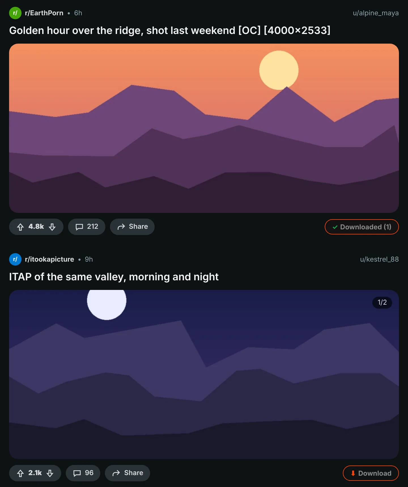
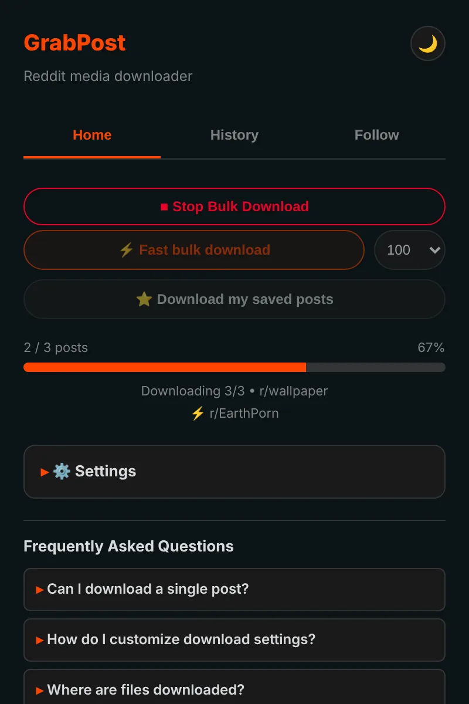
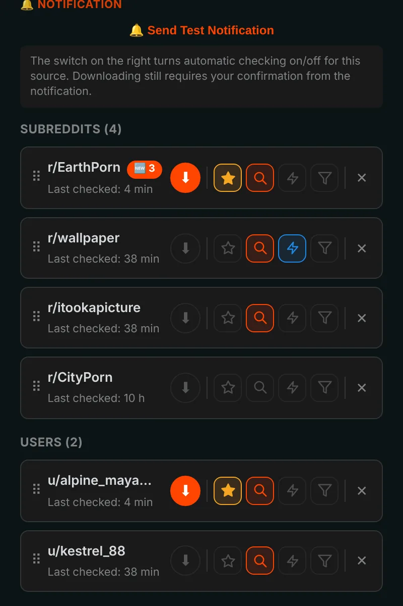
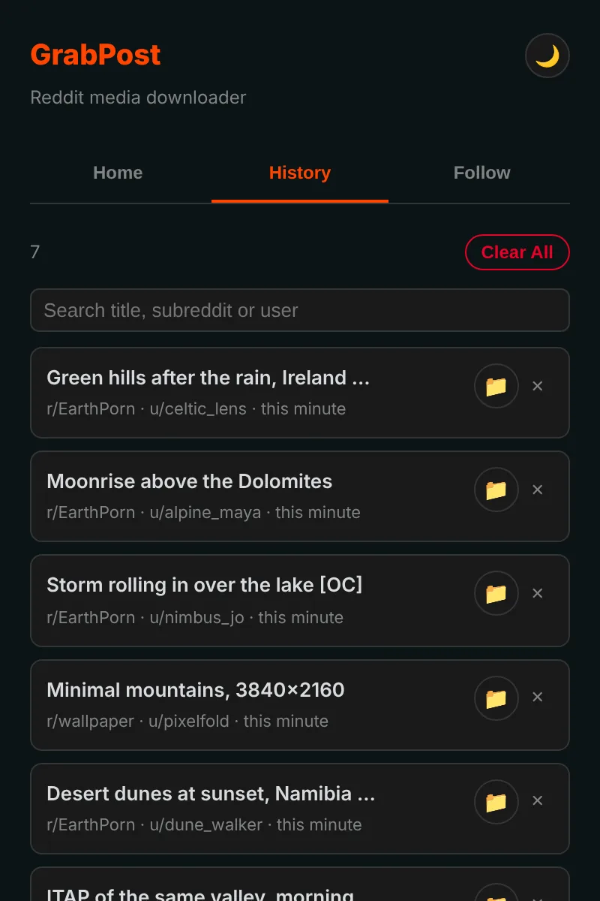

Save anything from Reddit in one click.
GrabPost puts a Download button on every Reddit post. Videos keep their sound, galleries arrive complete, and whole subreddits or profiles download while you do something else. Free, with no tracking.
Not in the stores yet. Installing from GitHub takes about a minute.

Press the button on the post.
A button on every post
The orange button sits in each post's vote and share row: in feeds, profiles and search results, on new and old Reddit. Images, galleries, GIFs, Redgifs and Imgur links all work. Alt+Shift+D downloads the post in the middle of the screen.

Whole pages in bulk
Fast mode reads a subreddit, profile, multireddit or search straight from Reddit's data, so you do not have to scroll. It skips what you already have and stops when it reaches posts you downloaded before. Your saved posts download the same way.

Follow, and new posts come to you
Follow subreddits and users and get a notification when new media appears, or let it download by itself. Filter by media type, NSFW or keywords. Up to 10 favorites can be checked as often as every 5 minutes.

Every download remembered
History lists what you saved and has a search box, and posts you already have are marked on Reddit. Backups are written automatically, so reinstalling does not wipe your list.

The details are taken care of
Videos with sound
Reddit keeps the sound in a separate file. GrabPost finds it and merges it, right in your browser.
Your folders, your file names
Templates such as {subreddit}/{user} for folders and {date}_{title} for files.
No duplicates
Recognizes the same picture even when someone re-uploaded it to another subreddit.
Works next to IDM
Download managers cannot take the file over and throw away your folder names.
Patient with Reddit
When Reddit asks for a break, GrabPost waits exactly as long as asked and carries on.
15 languages
The extension and this page speak your language.
What you download is your business
- No analytics, no tracking, no account
- Talks only to Reddit and the sites that host its media
- Your history and settings stay in your browser
- Source code on GitHub
Install in a minute
GrabPost is not in the Chrome Web Store yet, so it is installed by hand. It works in Chrome, Edge, Brave, Opera and other Chromium browsers.
- Download the latest grabpost-v…zip from GitHub and unzip it into a folder you will keep.
- Open
chrome://extensionsand turn on Developer mode in the top right corner. - Click Load unpacked and choose the unzipped grabpost folder.
- Open Reddit. The orange button appears on posts, and the toolbar icon opens the GrabPost panel.
To update, replace the files in the same folder and press the reload button on the GrabPost card. Your settings and history stay.
Firefox: the Add-ons store version is on its way. Until then the Firefox zip can be loaded temporarily from about:debugging.
Questions
Is GrabPost free?
Yes, every feature is free. If it saves you time, you can buy the developer a coffee.
Where do the files go?
Into your browser's download folder, inside a subfolder you choose. By default that is Reddit Downloads, and file names start with the subreddit name.
Do I need to be logged in to Reddit?
Only for your saved posts and for age-restricted communities. Everything else works without an account.
Will I lose my history if I reinstall?
No. With browser sync on, settings and the follow list come back by themselves. A backup file is also saved automatically, and GrabPost can rebuild its history from the browser's download list.
Does it work in Edge, Brave or Opera?
Yes. Any Chromium browser that can load an unpacked extension works with the Chrome zip.
Download GrabPost
Not in the stores yet. Installing from GitHub takes about a minute.